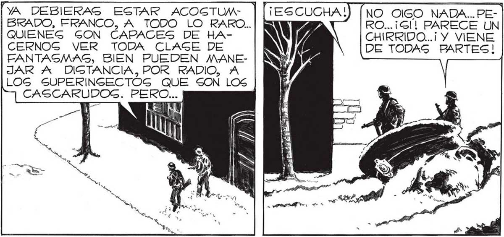
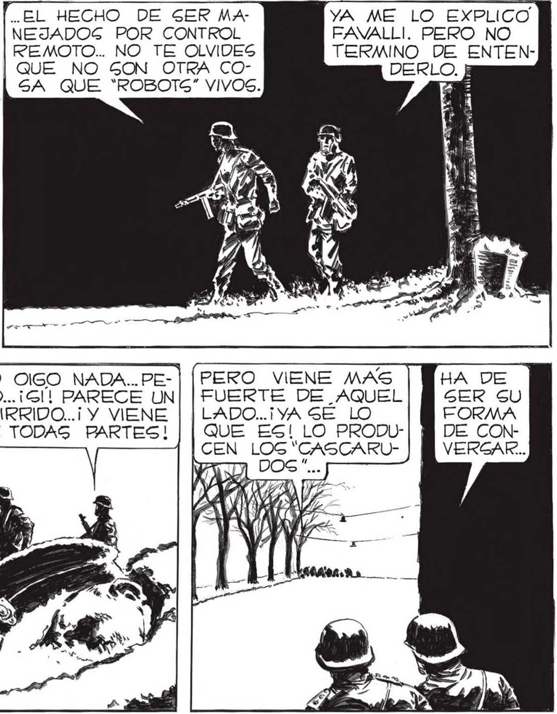

138 [PAGAMOS, Gl... PASAMOS LA LIN TENIENTE, ¿CERA POSIBLE QUE ESE APARATO QUE TODOS LLEVAN CLAVADO EN LA NUCA, SEA ALGO ASI COMO UN PILO: TO AUTOMÁTICO QUE LES HACE ACTUAR, SEGÚN LA VOLUNTAD DEL 3 A? O QUIZA GEA UN RECLAMO PARECIDO AL DE LOS GRILLOS... TE CONFIESO, FRANCO, QUE ESTE CHlRRIAR ME CRIGPA.. SENTIRLO ENTRE TANTA MUERTE, ENTRE TANTA... MEDIA... ¡PERO AHORA ENTRAMOS AL AREA EA 'YA DEBIERAS ESTAR ACOGTUMBRADO, FRANCO, A TODO LO RARO.. QUIENES SON CAPACES DE HACERNOG VER TODA CLAGE DE FANTASMAS, BIEN PUEDEN MANEJAR A DIGTANCIA, POR RADIO, A LOGS SUPERINGECTOG QUE SON LOS CASCARUDOG. PERO... LOS NERVIOS DE CUALQUIERA... NO RESGULTO TAN DIFICIL, DESPUEG DE TODO. LOG “CAGCARUDOS” TIENEN EN GU CONTRA... GENOR.. CRUCEMOG A LA CARRERA,ASI NO NOG VEN... CHIRRIDO...¡ Y VIENE DE TODAG PARTES! lSecu! alTreo | EN EL ARE, APENAS AUDIBLE PERO A ad GIEMPRE PRESENTE, EL CHIRRIDO DE UNA CALLE: MONROE . UNAS | CUADRAG MAS ALLA” DOBLAMOS HACIA EL CENTRO: MONTAÑESES. LA YA TAN FAMILIAR DESOLACIÓN DE SIEMPRE NOS RODEABA; LAS CALLES CÚBIERTAS POR LA NEVADA APARECÍAN ENVUEL | TAS EN UN SUDARIO PAVOROGAMENTE BELLO. EL HECHO DE SER MANEJADOS POR CONTROL REMOTO... NO TE OLVIDES | QUE NO GON OTRA COSA QUE *ROBOTS” VIVOS. WPF se EAN VE NA YA ME LO EXPLICO. FAVALLI. PERO NO TERMINO DE ENTENLADO..¡ YA SE LO QUE ES! LO PRODUCEN LOG “CASCARUia DOS”... EN Al DE LOG *CASCARUDOSG”.. YA EGTAMOG LEJOG DEL ESTADIO, TENIENTE..¿HASTA DONDE. DEBEMOS SEGUIR HASTA ENCONTRARLOS 2

